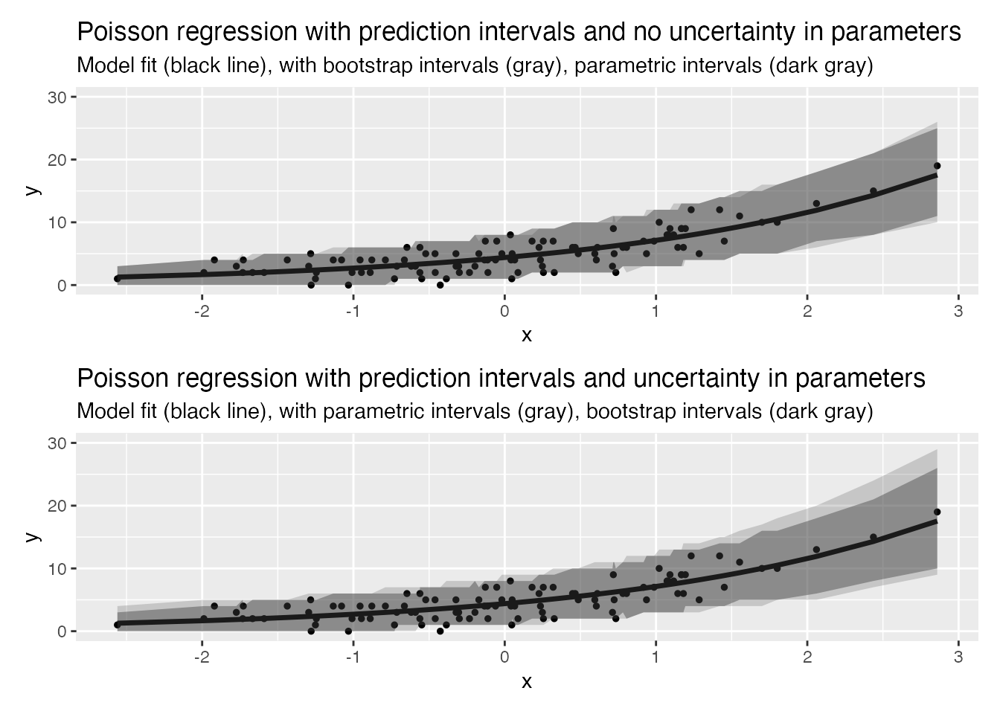
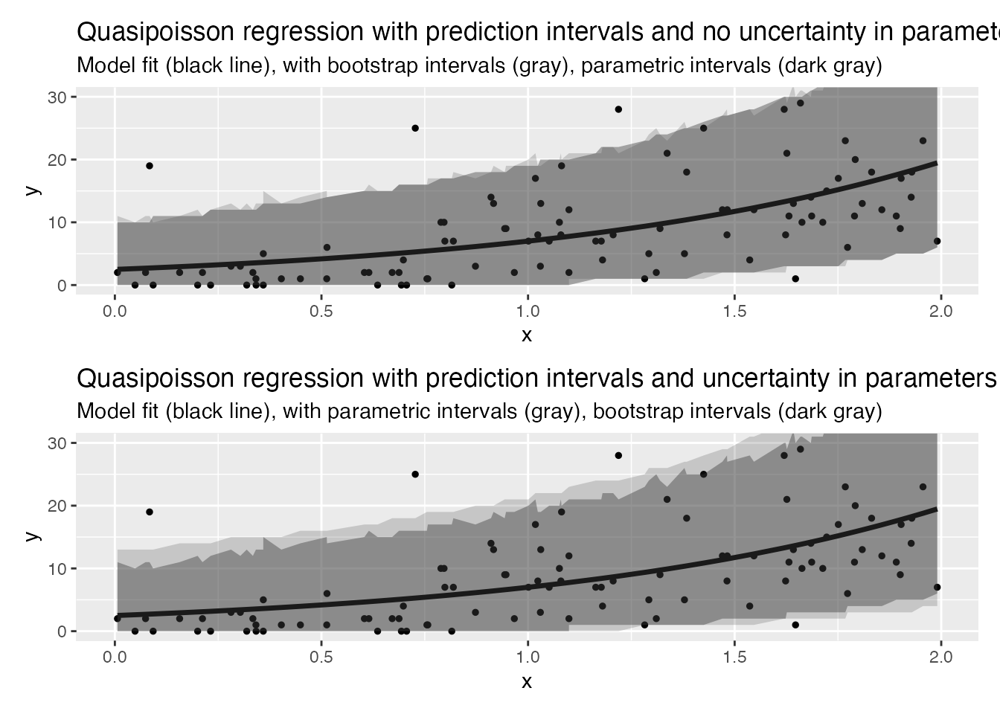

Overview
Our implementation of prediction intervals (when
simulate_pi = FALSE) follows that described by Gavin
Simpson in two posts on his blog. Whilst what follows
is a brief overview, more detail, including discussion on whether or not
it makes sense to calculate these intervals, can be found in the
following post.
Confidence interval
To calculate prediction intervals we first calculate the confidence interval on the scale of the linear predictor. The upper and lower bounds of this interval, are then fed in to the inverse link function which in turn gives us a confidence interval on the expected response.
Prediction interval
Once we have calculated the confidence interval on the response we feed the upper and lower bounds, in to the quantile function associated with the relevant distribution. The maximum and minimum values of the output are then used as the upper and lower bounds of our prediction interval.
Comparison to a bootstrap approach
Below we compare the prediction intervals from trending with those generated by the ciTools package. ciTools uses a parametric bootstrap approach so the expectation is that trending will produce a more conservative (wider) interval when we allow for uncertainty around the estimate, and a less conservative (narrower) interval when uncertainty is ignored.
The following examples build on those discussed in the ciTools glm vignette:
Example 1 - Poisson
# generate data
x <- rnorm(100, mean = 0)
y <- rpois(n = 100, lambda = exp(1.5 + 0.5*x))
dat <- data.frame(x = x, y = y)
fit <- glm(y ~ x , family = poisson(link = "log"))
# use ciTools to add prediction interval
dat1 <- add_pi(dat, fit, names = c("lpb", "upb"), alpha = 0.1, nsims = 20000)
#> Warning in add_pi.glm(dat, fit, names = c("lpb", "upb"), alpha = 0.1, nsims =
#> 20000): The response is not continuous, so Prediction Intervals are approximate
head(dat1)
#> x y pred lpb upb
#> 1 -0.1828667 1 3.827454 1 7
#> 2 -0.5274517 3 3.227802 1 6
#> 3 0.4207357 6 5.158692 2 9
#> 4 -0.3591717 2 3.507896 1 7
#> 5 2.2337946 15 12.644802 7 19
#> 6 0.3804049 4 5.056828 2 9
# add intervals with trending (no uncertainty in parameters)
poisson_model <- glm_model(y ~ x, family = "poisson")
fitted_model <- fit(poisson_model, dat)
dat2 <- predict(fitted_model, simulate_pi = FALSE, uncertain = FALSE, alpha = 0.1)
dat2 <- get_result(dat2)
head(dat2[[1]])
#> <trending_prediction> 6 x 7
#> y x estimate lower_ci upper_ci lower_pi upper_pi
#> <int> <dbl> <dbl> <dbl> <dbl> <dbl> <dbl>
#> 1 1 -0.183 3.83 3.50 4.19 1 7
#> 2 3 -0.527 3.23 2.90 3.59 1 6
#> 3 6 0.421 5.16 4.77 5.57 2 9
#> 4 2 -0.359 3.51 3.18 3.87 1 7
#> 5 15 2.23 12.6 10.7 14.9 7 19
#> 6 4 0.380 5.06 4.68 5.46 2 9
# add intervals with trending (uncertainty in parameters)
dat3 <- predict(fitted_model, simulate_pi = FALSE, alpha = 0.1)
dat3 <- get_result(dat3)
head(dat3[[1]])
#> <trending_prediction> 6 x 7
#> y x estimate lower_ci upper_ci lower_pi upper_pi
#> <int> <dbl> <dbl> <dbl> <dbl> <dbl> <dbl>
#> 1 1 -0.183 3.83 3.50 4.19 1 8
#> 2 3 -0.527 3.23 2.90 3.59 0 7
#> 3 6 0.421 5.16 4.77 5.57 2 10
#> 4 2 -0.359 3.51 3.18 3.87 1 7
#> 5 15 2.23 12.6 10.7 14.9 6 22
#> 6 4 0.380 5.06 4.68 5.46 1 10
# plots
p1 <- ggplot(dat1, aes(x, y)) +
geom_point(size = 1) +
geom_line(aes(y = pred), size = 1.2) +
geom_ribbon(aes(ymin = lpb, ymax = upb), alpha = 0.2) +
geom_ribbon(aes(ymin = `lower_pi`, ymax = `upper_pi`), data = dat2[[1]], alpha = 0.4) +
ggtitle(
"Poisson regression with prediction intervals and no uncertainty in parameters",
subtitle = "Model fit (black line), with bootstrap intervals (gray), parametric intervals (dark gray)"
) +
coord_cartesian(ylim=c(0, 30))
#> Warning: Using `size` aesthetic for lines was deprecated in ggplot2 3.4.0.
#> ℹ Please use `linewidth` instead.
#> This warning is displayed once every 8 hours.
#> Call `lifecycle::last_lifecycle_warnings()` to see where this warning was
#> generated.
p2 <- ggplot(dat1, aes(x, y)) +
geom_point(size = 1) +
geom_line(aes(y = pred), size = 1.2) +
geom_ribbon(aes(ymin = lpb, ymax = upb), alpha = 0.4) +
geom_ribbon(aes(ymin = `lower_pi`, ymax = `upper_pi`), data = dat3[[1]], alpha = 0.2) +
ggtitle(
"Poisson regression with prediction intervals and uncertainty in parameters",
subtitle = "Model fit (black line), with parametric intervals (gray), bootstrap intervals (dark gray)"
) +
coord_cartesian(ylim=c(0, 30))
p1 / p2
Example 2 - Quassipoisson
# generate data
x <- runif(n = 100, min = 0, max = 2)
mu <- exp(1 + x)
y <- rnegbin(n = 100, mu = mu, theta = mu/(5 - 1))
dat <- data.frame(x = x, y = y)
fit <- glm(y ~ x, family = quasipoisson(link = "log"))
# use ciTools to add prediction interval
dat1 <- add_pi(dat, fit, names = c("lpb", "upb"), alpha = 0.1, nsims = 20000)
#> Warning in add_pi.glm(dat, fit, names = c("lpb", "upb"), alpha = 0.1, nsims =
#> 20000): The response is not continuous, so Prediction Intervals are approximate
head(dat1)
#> x y pred lpb upb
#> 1 0.18921343 9 4.042724 0 12
#> 2 0.37515761 6 4.665845 0 14
#> 3 1.99164654 9 16.223686 5 31
#> 4 0.48695539 8 5.085826 0 15
#> 5 0.09893074 2 3.770912 0 12
#> 6 0.52177297 7 5.224189 0 15
# add intervals with trending (no uncertainty in parameters)
quasipoisson_model <- glm_model(y ~ x, family = quasipoisson(link = "log"))
fitted_model <- fit(quasipoisson_model, dat)
dat2 <- predict(fitted_model, simulate_pi = FALSE, uncertain = FALSE, alpha = 0.1)
dat2 <- get_result(dat2)
head(dat2[[1]])
#> <trending_prediction> 6 x 7
#> y x estimate lower_ci upper_ci lower_pi upper_pi
#> <int> <dbl> <dbl> <dbl> <dbl> <dbl> <dbl>
#> 1 9 0.189 4.04 3.15 5.18 0 12
#> 2 6 0.375 4.67 3.77 5.78 0 13
#> 3 9 1.99 16.2 13.1 20.0 5 31
#> 4 8 0.487 5.09 4.19 6.18 0 14
#> 5 2 0.0989 3.77 2.89 4.92 0 12
#> 6 7 0.522 5.22 4.33 6.31 0 14
# add intervals with trending (uncertainty in parameters)
dat3 <- predict(fitted_model, simulate_pi = FALSE, alpha = 0.1)
dat3 <- get_result(dat3)
head(dat3[[1]])
#> <trending_prediction> 6 x 7
#> y x estimate lower_ci upper_ci lower_pi upper_pi
#> <int> <dbl> <dbl> <dbl> <dbl> <dbl> <dbl>
#> 1 9 0.189 4.04 3.15 5.18 0 14
#> 2 6 0.375 4.67 3.77 5.78 0 15
#> 3 9 1.99 16.2 13.1 20.0 3 37
#> 4 8 0.487 5.09 4.19 6.18 0 16
#> 5 2 0.0989 3.77 2.89 4.92 0 14
#> 6 7 0.522 5.22 4.33 6.31 0 16
# plots
p3 <- ggplot(dat1, aes(x, y)) +
geom_point(size = 1) +
geom_line(aes(y = pred), size = 1.2) +
geom_ribbon(aes(ymin = lpb, ymax = upb), alpha = 0.2) +
geom_ribbon(aes(ymin = `lower_pi`, ymax = `upper_pi`), data = dat2[[1]], alpha = 0.4) +
ggtitle(
"Quasipoisson regression with prediction intervals and no uncertainty in parameters",
subtitle = "Model fit (black line), with bootstrap intervals (gray), parametric intervals (dark gray)"
) +
coord_cartesian(ylim=c(0, 30))
p4 <- ggplot(dat1, aes(x, y)) +
geom_point(size = 1) +
geom_line(aes(y = pred), size = 1.2) +
geom_ribbon(aes(ymin = lpb, ymax = upb), alpha = 0.4) +
geom_ribbon(aes(ymin = `lower_pi`, ymax = `upper_pi`), data = dat3[[1]], alpha = 0.2) +
ggtitle(
"Quasipoisson regression with prediction intervals and uncertainty in parameters",
subtitle = "Model fit (black line), with parametric intervals (gray), bootstrap intervals (dark gray)"
) +
coord_cartesian(ylim=c(0, 30))
p3 / p4